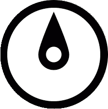

<!--
@license
Copyright (c) 2015 The Polymer Project Authors. All rights reserved.
This code may only be used under the BSD style license found at http://polymer.github.io/LICENSE.txt
The complete set of authors may be found at http://polymer.github.io/AUTHORS.txt
The complete set of contributors may be found at http://polymer.github.io/CONTRIBUTORS.txt
Code distributed by Google as part of the polymer project is also
subject to an additional IP rights grant found at http://polymer.github.io/PATENTS.txt
-->
<link rel="import" href="../../bower_components/polymer/polymer.html">
<link rel="import" href="../../bower_components/paper-material/paper-material.html">
<link rel="import" href="../../bower_components/paper-header-panel/paper-header-panel.html">
<link rel="import" href="../../bower_components/paper-toolbar/paper-toolbar.html">
<link rel="import" href="../../bower_components/paper-button/paper-button.html">
<link rel="import" href="../../bower_components/iron-flex-layout/iron-flex-layout.html">
<link rel="import" href="../../bower_components/device-orientation/device-orientation.html">
<dom-module id="device-compass">
    <!--
Simple compass that rotate according to the angle parameter
@group Gameplay Element
@demo demo/index.html


-->
    <template>
        <style is="custom-style" include="iron-flex iron-flex-alignment">
        .mediaimg {
            margin-top: 20px;
            max-width: 300px;
            display: flex;
            border-radius: 3px;
            -moz-box-shadow: 6px 5px 2px #CECEB9;
            -webkit-box-shadow: 6px 5px 2px #CECEB9;
            -o-box-shadow: 6px 5px 2px #CECEB9;
            box-shadow: 6px 5px 2px #CECEB9;
            margin-bottom: 15px;
        }
        
        .doneButton {
            align-self: stretch;
            margin: none;
            margin-top: 30px;
        }
        
        .divText {
            justify-content: center;
            font-weight: bold;
            display: flex;
        }
        
        .divmedia {
            margin-bottom: 30px;
            display: flex;
            max-width: 300px;
        }
        
        .papermedia {
            display: flex;
            position: relative;
            flex-direction: column;
            align-items: center;
        }
        </style>
        <device-orientation id="orient" orientation="{{orientation}}"></device-orientation>
        <paper-header-panel class="flex">
            <paper-toolbar class="divText">
                <div> Follow compass direction </div>
                <paper-button on-click="fireMap">Go to map</paper-button>
            </paper-toolbar>
        </paper-header-panel>
        <div class="flex">
            <paper-material class='papermedia' elevation="1">
                
                <div class="remainingDist">Remaining distance : {{setDistance(distance)}} m</div>
            </paper-material>
        </div>
    </template>
    <script>
    (function() {
        'use strict';

        Polymer({
            is: 'device-compass',
            ready: function() {
                this.$.orient.addEventListener("orientation-changed", this.setOrientation.bind(this))
            },

            setOrientation: function(value) {
                var heading = this.get('destinationHeading');
                if(heading<=0){
                    var rotate=(360 - heading) -value.detail.value.alpha;
                }
                if(heading>=0){
                    var rotate=heading -value.detail.value.alpha;
                }


                this.angleChange(rotate);

            },
            fireMap:function(){
                this.fire('showMap',null)
            },
            angleChange: function(newval) {
                this.transform('rotateZ(' + newval + 'deg)', this.$.mycompass);

            },
            _onDistanceChange: function(newval) {

            },
            setDistance: function(newval) {
               return Math.ceil(newval);
            },

            properties: {
                angle: {
                    type: Number,
                    notify: true,
                    value: 0
                },
                distance: {
                    type: Number,
                    notify: true,
                    observer: '_onDistanceChange',

                },
                destinationHeading: {
                    type: Number,
                    notify: true,
                },

                heading: {
                    type: String,
                    notify: true,
                }

            }
        });
    })();
    </script>
</dom-module>
